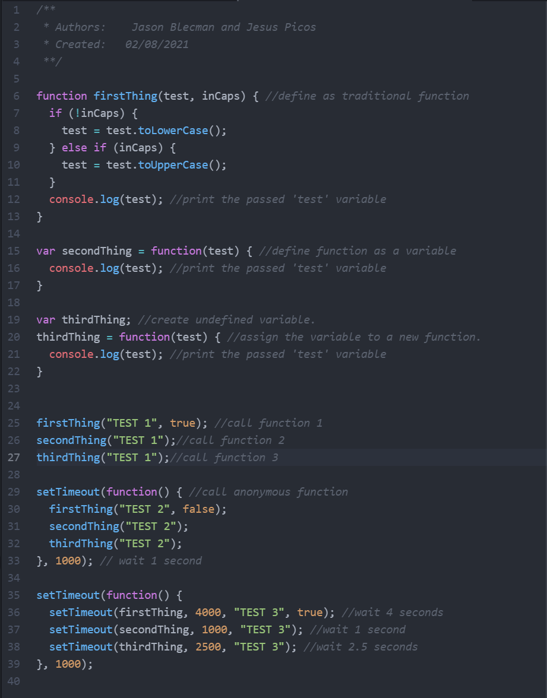
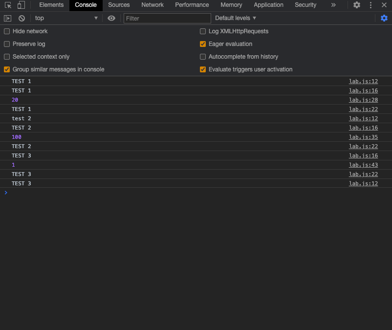

Lab 8: Anon Functions and Callbacks Header
Challenge
Working with your partner, experiment with anonymous functions and callbacks.
Problems
Some of the problems we ran into include a small problem we ran into was just teletype stopping Jesus from editing code until we reset.Next we also had to troubleshoot printing our JS output onto the web page as well as being in the console. Part of this process was Jason trying to figure out how to NOT overwrite an entire page of HTML and CSS beauty with the document.writeln() thing was a headache. We gave up a little and went to StackOverflow to find anything that would help. EVentually, we found the innerHTML property that helped us a lot. (Perhaps there is an outerHTML property? Dun dun dun...)
Teletype Issuses
Teletype would not allow Jesus to edit cetain code randomly unless we stopped sharing and started again.
Side Note
This its the entended layout of our last lab. After failing to recreate it last time, I found out how to do it using a new method that is more reliable!
Results

This is the JS code for our web page.
This is an image of what our JS code pushed to the console.